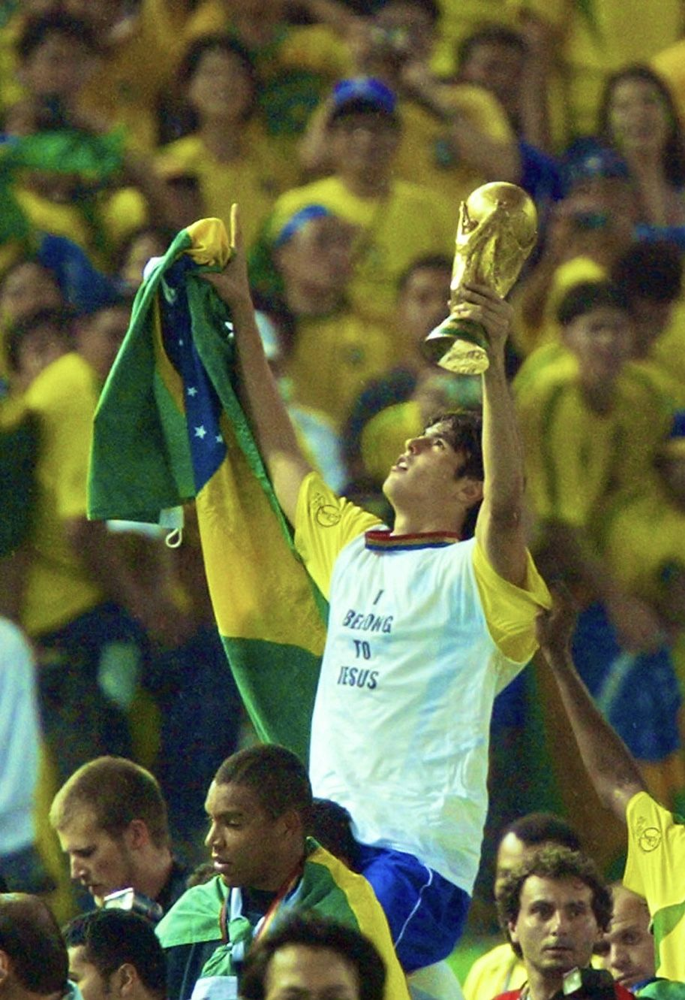

meu primeiro post
por: Davi Henrique
boas vindas ao meu novo blog, aqui vou compartilhar meus conhecimentos sobre o mundo do futebol
vou compartilhar meus conhecimentos sobre o mundo do futebol, especialmente sobre meu jogador favorito, o Kaká, o ultimo brasileiro a ser campeão da bola de ouro
por: Davi Henrique
boas vindas ao meu novo blog, aqui vou compartilhar meus conhecimentos sobre o mundo do futebol

por: Davi Henrique
Agora dando continuidade ao meu primeiro post vou contar uma cuiriosidade dele:
Aos 18 anos, enquanto estava na casa dos avós, Kaká bateu a cabeça no fundo de uma piscina em um acidente de tobogã. Ele fraturou a vértebra e por pouco não ficou tetraplégico.
Veja por que ele foi tão crucial para a Amarelinha:
Arrancadas imparáveis do meio-campoVerticalidade
pura: Ele pegava a bola na defesa e ia direto pro gol,
sem firula.
Transição absurda: Deixava os volantes adversários para trás com passadas longas e
precisas.
Garçom de luxo: Servia Ronaldo, Adriano e Ronaldinho Gaúcho sempre na cara do gol.
O cara dos jogos grandes:
Amassador de rivais: Acabou com a Argentina na final de 2005 com um golaço de
fora da área.
Líder no sacrifício: Em 2010, mesmo baleado por lesões no joelho, jogou no limite pelo
Brasil.
Último gênio coroado: Foi o último brasileiro a vestir a coroa de melhor do planeta (2007).
Fonte: BBC News

por: Davi Henrique
Além de ajudar a trazer o teetra campeonato mundial ao Brasil em 2002 ele também teve outras partiçipações
Se você pegou a era de ouro dos anos 2000, sabe do que estou falando. Kaká não era aquele meia clássico que cadenciava o jogo; ele destruía defesas na base da pura velocidade e objetividade. Campeão em 2002 e dono de duas Copas das Confederações (2005 e 2009), o camisa 10 unia o talento brasileiro com o físico da Europa.